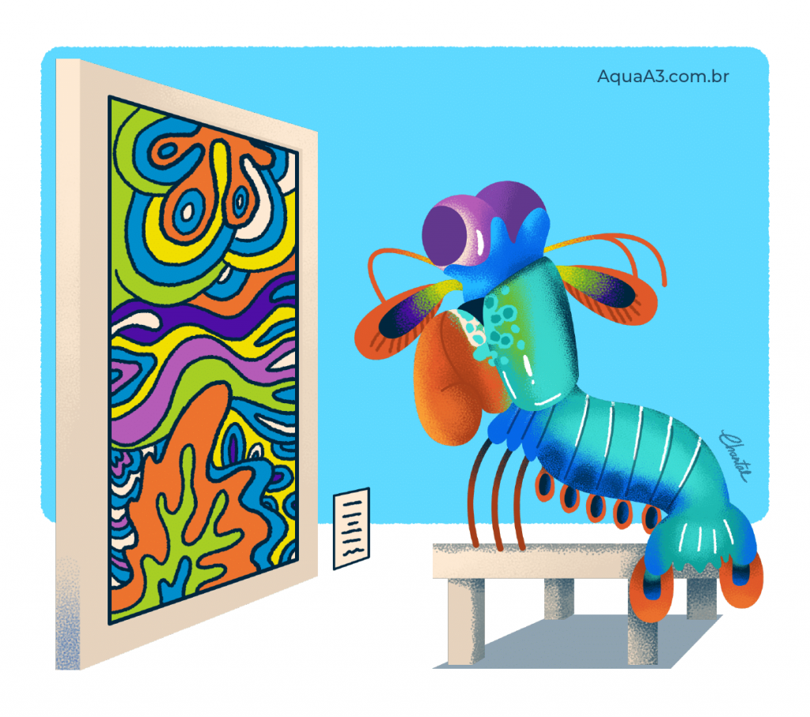

Fatos sobre Stamatopoda
Informações gerais
- Nome cientifico: Odontodactylus scyllarus.
- Reino: Animalia
- Subfilo: Crustacea
- Classe: Malacostraca
- Subclasse: Haplocarida
- Ordem: Stomatopoda
Uma explosão de cores
Se touros são daltónicos, humanos enxergam os tres cores primarias e borboletas enxergam cores fora da capacidade humana de compressão, imagina o que esse pequeno crustáceo pode enxergar com seus 16 cones- receptores de cores.Palavras não conseguem descrever a viagem lisergica multiespectral que deve ser a visão desses pequenos seres, que deixaria com inveja qualquer apreciador de prog-rock dos anos 70.
One punch crustacean
Apesar de pequeno o Stamatopoda tem um soco que deixaria campeões do boxe como Popó, Maguila e Mike tyson no chinelo. A velocidade de seus socos são equiparáveis a tiros e são tão rápidos que chegar a ferver a agua em volta de seus apêndices e produzem ondas de choques. As vitimas dessas investidas são geralmente partidas em pedaços, que é como esse camarão geralmente caça e se alimenta.

E você anchando que era antisocial
Apesar de ser um animal que exala glamour e um que de sofisticação não se engane, o mantis não é flor que se cheire. Sendo um animal extremamente agressivo e territorial, esse animal vai descer a porrada em qualquer um que adentrar seu território.Raramente você vera a presença deles em aquários devido a tendencia deles de matar todos os outros ocupantes do recinto e quebrar o vidro do mesmo. Michael Myers e Jason ficariam orgulhosos!